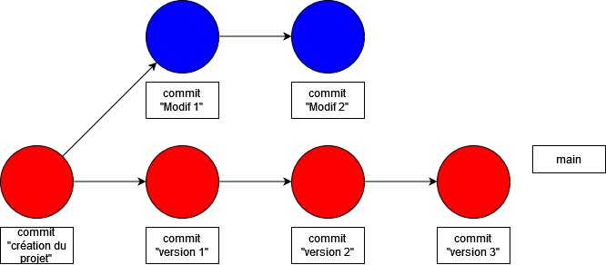

Naviguer dans les branches
Création d’une branche
git branch dev
Se déplacer dans la branche
git checkout dev
Afficher les branches
Remarque: une étoile apparaît devant la branche en cours
git branch
Supprime une branche
Remarque: on ne peut pas supprimer une branche dont les sauvegardes n'ont pas été rassemblées
git branch -d dev

Affichage léger avec un commit par ligne et arborescence des branches
git log --graph --abbrev-commit --decorate --format=format:'%C(bold blue)%h%C(reset) - %C(bold
green)(%ar)%C(reset) %C(white)%s%C(reset) %C(dim white)- %an%C(reset)%C(auto)%d%C(reset)' --all